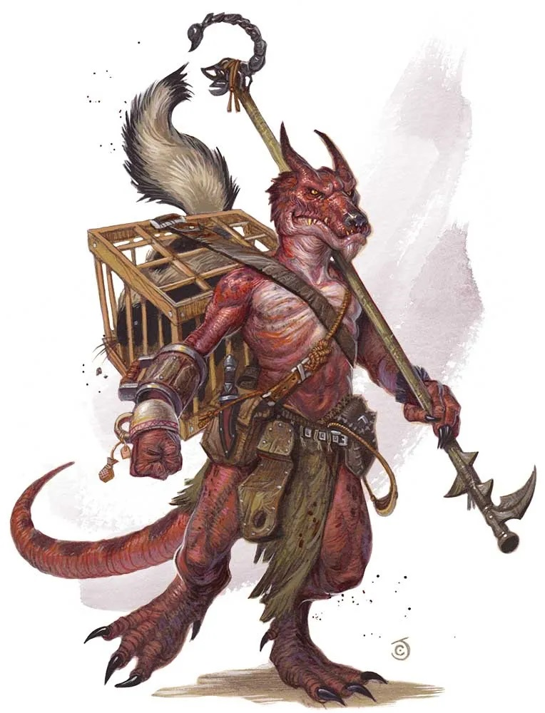

Koboldy
Koboldy to rasa małych, tchórzliwych i sadystycznych istot o gadzim wyglądzie. Są to mierzące do metra wzrostu humanoidy posiadające gadzią, zazwyczaj ubarwioną na zielono skórę. Istnieją także koboldy o skórze w odcieniach od ciemnego brązu do niemal ciemnej czerwieni.
Ich ciało ma zapach podobny do zapachu mokrego psa lub nieświeżej wody. Głowa istoty posiada cechy gadzie i psie. Znajdują się na niej dwa małe rogi, nie nadające się do walki. Oczy koboldów mają pomarańczowe białka, natomiast źrenice są czerwone.
Koboldy żyją w ciemnych miejscach pod ziemią lub w gęstych lasach. Są doskonałymi górnikami i chętnie osiadają w terenie bogatym w surowce mineralne. Typowe koboldowe plemię liczy od 40 do 400 samców, o połowę mniej samic i od 4 do 40 młodych.